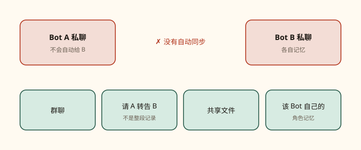
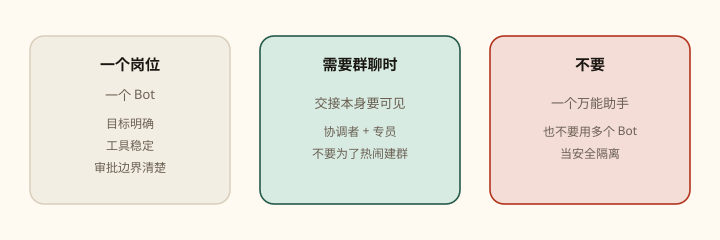

第 04 课
聊天隔离，电脑不分家
多个 Bot 可以并行，但它们不是互不认识的保险柜。聊天各聊各的，工位却是同一张桌子。

三层关系，不要混
| 层 | 隔离吗 | 记住什么 |
|---|---|---|
| 私聊 / 角色记忆 | 是。各 Bot 各聊各的 | 该 Bot 的偏好、要点、摘要。不是把全文自动塞给别人 |
| 云电脑 | 否。全体共享 | 文件、浏览器登录、会话、命令行凭证 |
| 群聊与转告 | 可见的交接 | 你让他们看到的那一段，不是隐秘同步整段记录 |
几个 Bot 可以同时推理、用连接器、处理文件、互相协调。每个 Bot 在共享电脑上有自己的屏幕；一个 Bot 在自己的屏幕上一次只能跑一个电脑操作任务。
不要这样想
「这个 Bot 看不到那个 Bot 的聊天，所以登录是隔离的。」错。登录在电脑上，电脑是共享的。也不要声称「完整对话记录会自动共享」——官方没这么说。
上下文怎么搬家
- 群聊：交接过程本身需要被看见时用。
- 请一个 Bot 转告另一个：直接让 A 给 B 发需要的结论，而不是幻想 B 读过 A 的私聊。
- 共享文件：结论放进云电脑上的项目文件夹，谁都能接着干。
- 该 Bot 自己的记忆：只服务它自己的下一次任务。
请 A 转告 B
把刚才调查的结论（最大步骤变化、图表链接、未决问题）发给 Analytics Reviewer。只要结论和链接，不要粘贴我们的整段聊天。提醒它：不要改仪表盘，先出调查计划给我审。
最小编制

- 让一个 Bot 对一条端到端结果负责。
- 只有出现稳定的专家岗位时，再加第二个。
- 当交接本身需要可见时，把他们放进群聊。
- 对外动作继续放在审批后面。
官方举例：Website Launch 群里可以有发布协调、内容编辑、分析复核。协调者分活，群把交接留在同一段对话里。好岗位像 Talent Scout、Expense Manager、Bug Reproduction；「General Helper」给的指引太少，存下来的上下文也难复用。
再拆 Bot 的信号：不同目标、不同工具与来源、不同工作风格、不同审批边界、不同重复日程。
岗位说明书（可放进 description）
负责每周账号健康回顾。拉取产品使用和支持信号，标出流失或扩张证据，给客户成功团队一份带链接的观察名单。未经审批，绝不联系客户或改账号。
在对话里 @ 谁
composer 里用 @ 附上 Bot、群、Routine、连接器。这是点名，不是把私聊历史合并。用 / 引用 Skill。